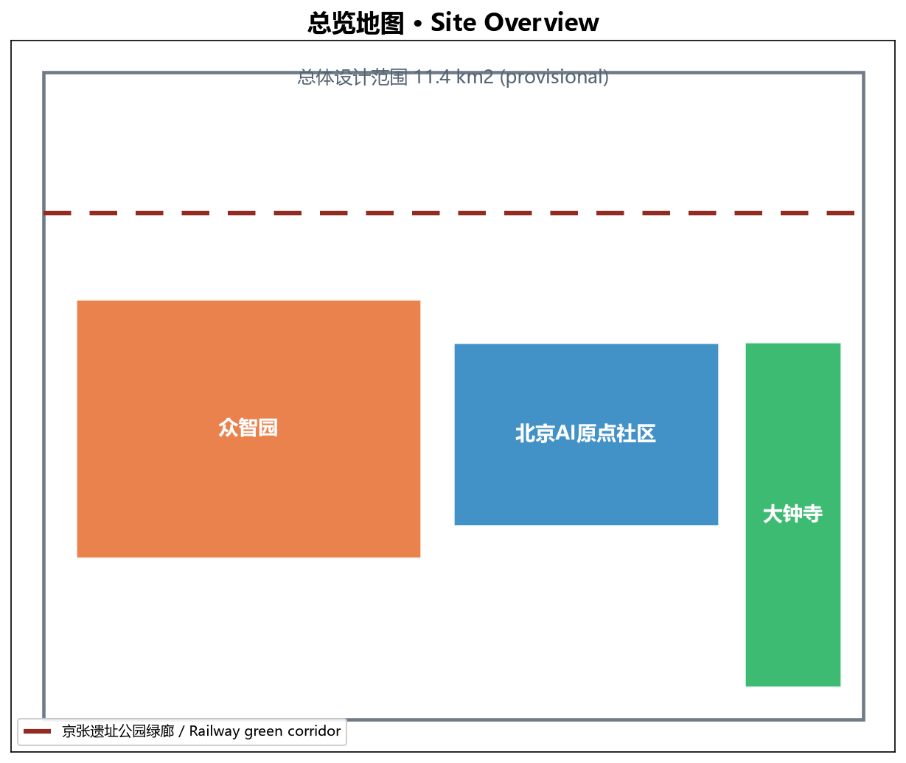
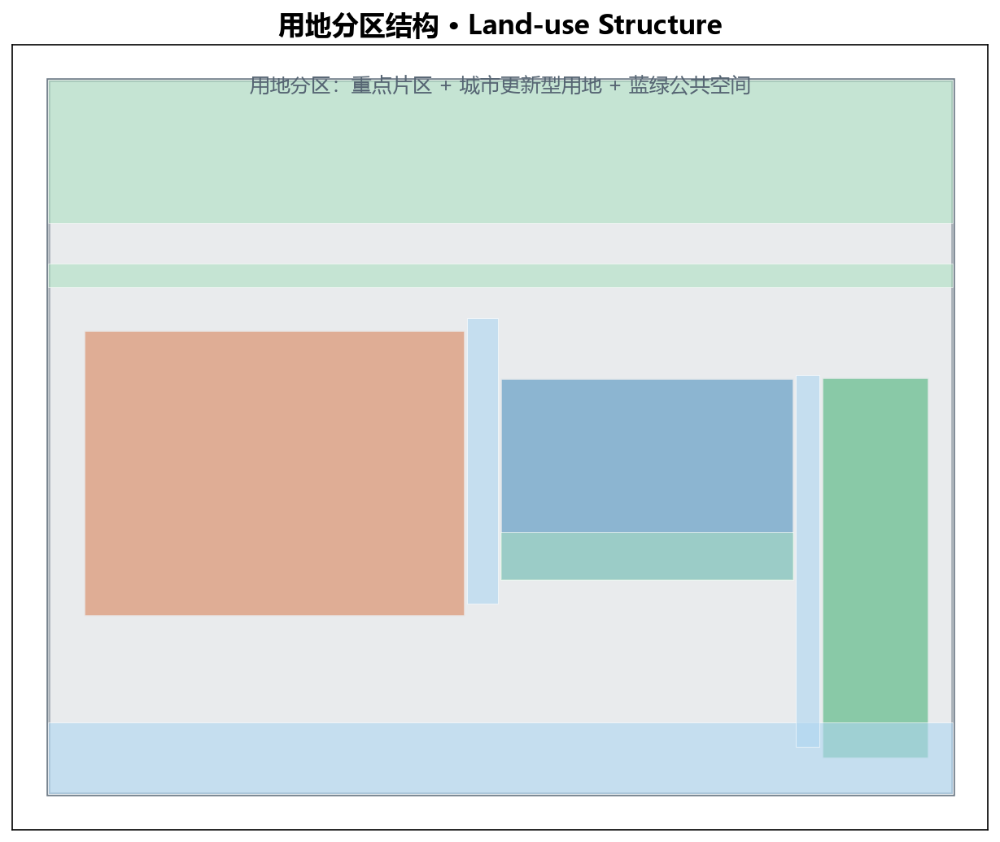
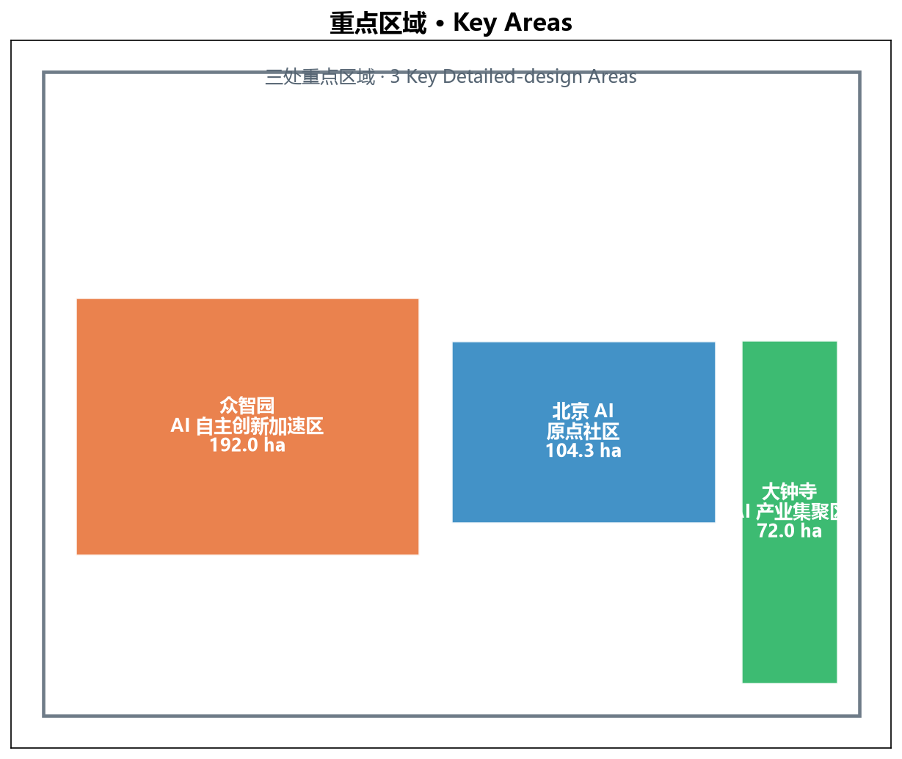
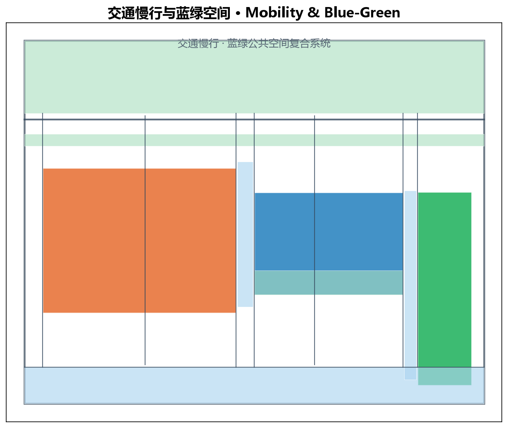
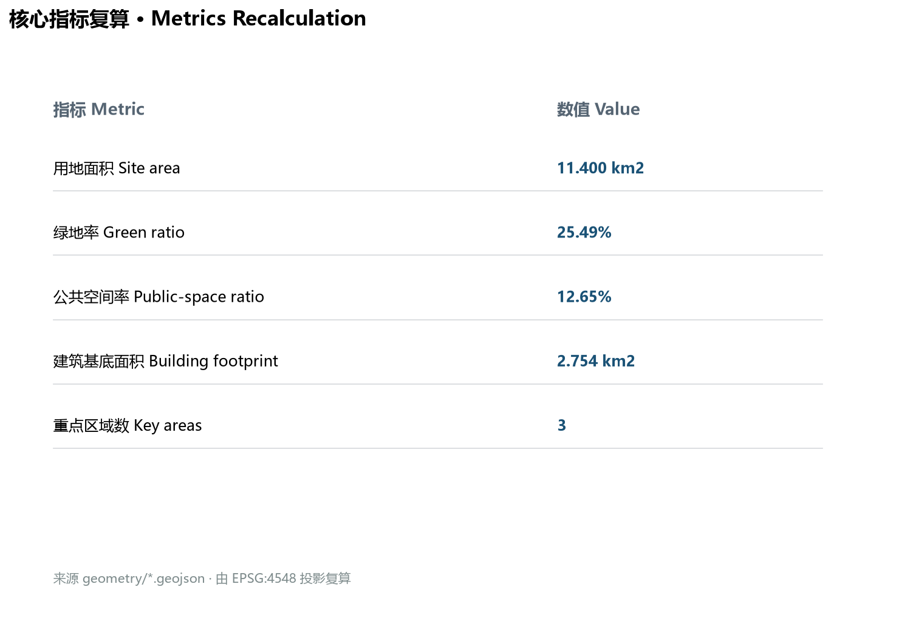

京张智脉 · 百年京张 AI 创新带城市设计
统筹研究范围 43.6 km2、总体设计范围 11.4 km2、重点区域 368.4 公顷。本方案以“京张智脉共生带”为总体概念，形成“一带三核、多点场景、蓝绿慢行复合环”。
总览地图 Site Overview

用地分区 Land-use Structure

重点区域 Key Areas

交通慢行与蓝绿公共空间 Mobility & Blue-green

核心指标复算 Metrics Recalculation

Site area: 11.400 km2
Green: 25.49%
Public: 12.65%